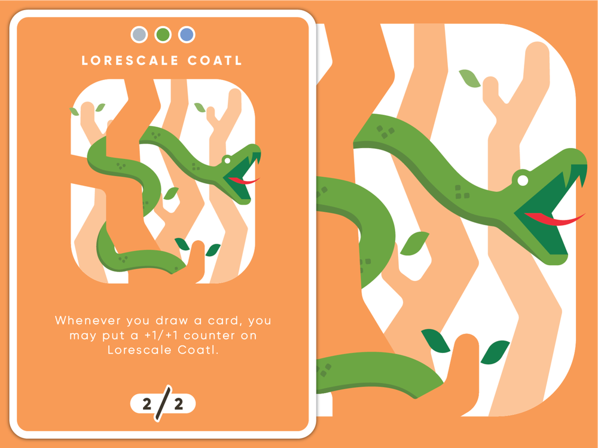
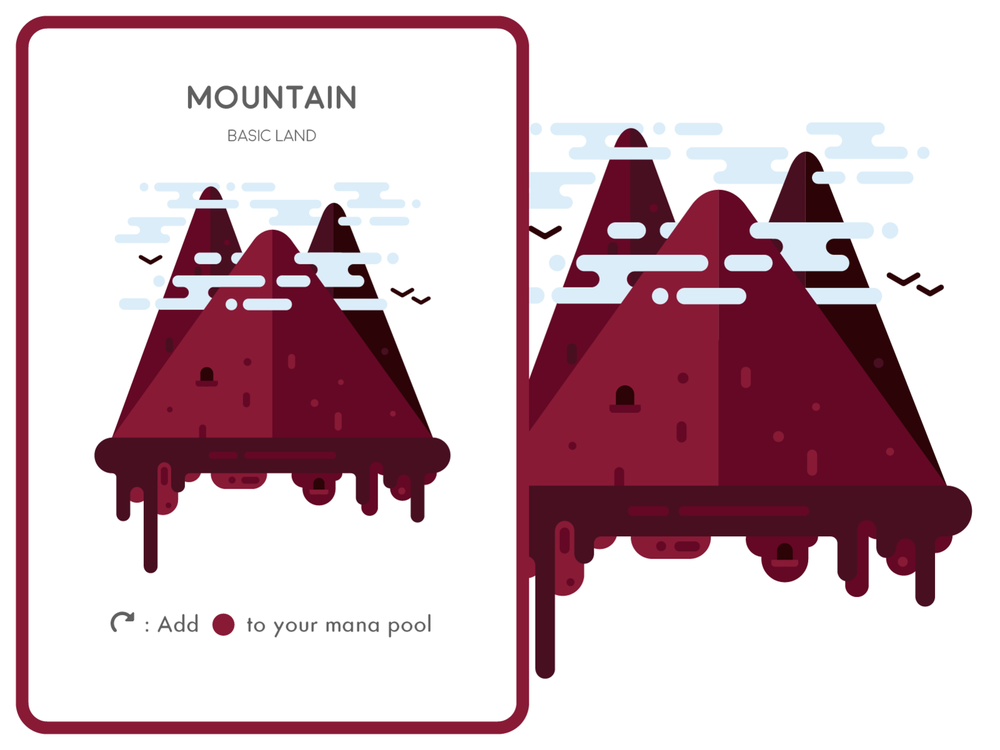
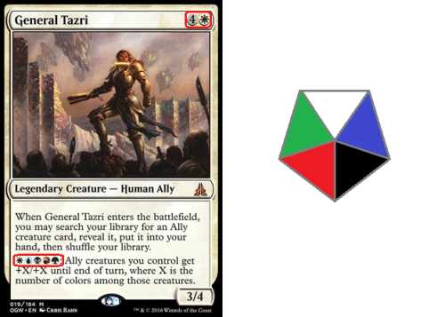

Mana Cost Symbols
Regular Mana:
Generic Mana: X121520
Colorless Mana:
Snow Mana:
Hybrid:
Two-brid: 2 2 2 2 2
Phyrexian: ϕϕϕϕϕ
Phyrexian Hybrid 1: ϕϕϕϕϕϕϕϕϕϕ
Color Indicators
Unicode Symbols
Tap {T}: ⭮
Untap {Q}: ⭯
Energy {E}: ⚡
Phyrexian {P}: ϕ
Chaos {CHAOS}: ☯️
Ticket {TK}: 🎟️
Unused Acorn {A}: 🌰
Unused Mana Symbols {W}{U}{B}{R}{G} {C} {S}: ☀️💧💀🔥🌳 🔶 ❄️
Cards
Mountain
Basic Land - Mountain
(⭮: Add .)
Wastes
Basic Land
⭮: Add .
Aether Hub
Land
When Aether Hub enters the battlefield, you get ⚡ (an energy counter).
⭮: Add .
⭮, Pay ⚡: Add one mana of any color.
Dryad Arbor
Land Creature — Forest Dryad
1/1
(Dryad Arbor isn't a spell, it's affected by summoning sickness, and it has "⭮: Add .")
War Screecher
Creature — Bird
1/3
1
Flying
5, ⭮: Other creatures you control get +1/+1 until end of turn.
Hateflayer
Creature — Elemental
5/5
5
Wither (This deals damage to creatures in the form of -1/-1 counters.)
2, ⭯: Hateflayer deals damage equal to its power to any target. (⭯ is the untap symbol.)
Asmoranomardicadaistinaculdacar
Legendary Creature — Human Wizard
3/3
As long as you've discarded a card this turn, you may pay to cast this spell.
When Asmoranomardicadaistinaculdacar enters the battlefield, you may search your library for a card named The Underworld Cookbook, reveal it, put it into your hand, then shuffle.
Sacrifice two Foods: Target creature deals 6 damage to itself.
Progenitus
Legendary Creature — Hydra Avatar
10/10
Protection from everything
If Progenitus would be put into a graveyard from anywhere, reveal Progenitus and shuffle it into its owner's library instead.
Rage Extractor
Artifact
4ϕ
(ϕ can be paid with either or 2 life.)
Whenever you cast a spell with ϕ in its mana cost, Rage Extractor deals damage equal to that spell's mana value to any target.
Ice Cauldron
Artifact
4
4, ⭮: You may exile a nonland card from your hand. You may cast that card for as long as it remains exiled. Put a charge counter on Ice Cauldron and note the type and amount of mana spent to pay this activation cost. Activate only if there are no charge counters on Ice Cauldron.
⭮, Remove a charge counter from Ice Cauldron: Add Ice Cauldron's last noted type and amount of mana. Spend this mana only to cast the last card exiled with Ice Cauldron.
The Reality Chip
Legendary Artifact Creature — Equipment Jellyfish
0/4
1
You may look at the top card of your library any time.
As long as The Reality Chip is attached to a creature, you may play lands and cast spells from the top of your library.
Reconfigure 2 (2: Attach to target creature you control; or unattach from a creature. Reconfigure only as a sorcery. While attached, this isn't a creature.)
Aetherwing, Golden-Scale Flagship
Legendary Artifact — Vehicle
*/4
Flying
Aetherwing, Golden-Scale Flagship's power is equal to the number of artifacts you control.
Crew 1 (Tap any number of creatures you control with total power 1 or more: This Vehicle becomes an artifact creature until end of turn.)
Okina, Temple to the Grandfathers
Legendary Land
⭮: Add .
, ⭮: Target legendary creature gets +1/+1 until end of turn.
Dance of the Dead
Enchantment — Aura
1
Enchant creature card in a graveyard
When Dance of the Dead enters the battlefield, if it's on the battlefield, it loses "enchant creature card in a graveyard" and gains "enchant creature put onto the battlefield with Dance of the Dead." Put enchanted creature card onto the battlefield tapped under your control and attach Dance of the Dead to it. When Dance of the Dead leaves the battlefield, that creature's controller sacrifices it.
Enchanted creature gets +1/+1 and doesn't untap during its controller's untap step.
At the beginning of the upkeep of enchanted creature's controller, that player may pay 1. If the player does, untap that creature.
Camouflage
Instant
Cast this spell only during your declare attackers step.
This turn, instead of declaring blockers, each defending player chooses any number of creatures they control and divides them into a number of piles equal to the number of attacking creatures for whom that player is the defending player. Creatures those players control that can block additional creatures may likewise be put into additional piles. Assign each pile to a different one of those attacking creatures at random. Each creature in a pile that can block the creature that pile is assigned to does so. (Piles can be empty.)
Gideon, Champion of Justice
Legendary Planeswalker — Gideon
4
2
+1
Put a loyalty counter on Gideon, Champion of Justice for each creature target opponent controls.
0
Until end of turn, Gideon, Champion of Justice becomes a Human Soldier creature with power and toughness each equal to the number of loyalty counters on him and gains indestructible. He's still a planeswalker. Prevent all damage that would be dealt to him this turn.
-15
Exile all other permanents.
Eater of Virtue
Legendary Artifact — Equipment
1
Whenever equipped creature dies, exile it.
Equipped creature gets +2/+0.
As long as a card exiled with Eater of Virtue has flying, equipped creature has flying. The same is true for first strike, double strike, deathtouch, haste, hexproof, indestructible, lifelink, menace, protection, reach, trample, and vigilance.
Equip 1
Commence the Endgame
Instant
4
This spell can't be countered.
Draw two cards, then amass X, where X is the number of cards in your hand. (Put X +1/+1 counters on an Army you control. If you don't control one, create a 0/0 black Zombie Army creature token first.)
Bolas's Citadel
Legendary Artifact
3
You may look at the top card of your library any time.
You may play the top card of your library. If you cast a spell this way, pay life equal to its converted mana cost rather than pay its mana cost.
⭮, Sacrifice ten nonland permanents: Each opponent loses 10 life.
Nissa, Who Shakes the World
Legendary Planeswalker — Nissa
5
3
Whenever you tap a Forest for mana, add an additional .
+1
Put three +1/+1 counters on up to one target noncreature land you control. Untap it. It becomes a 0/0 Elemental creature with vigilance and haste that's still a land.
-8
You get an emblem with "Lands you control have indestructible." Search your library for any number of Forest cards, put them onto the battlefield tapped, then shuffle your library.
Ilharg, the Raze-Boar
Legendary Creature — Boar God
6/6
3
Trample
Whenever Ilharg, the Raze-Boar attacks, you may put a creature card from your hand onto the battlefield tapped and attacking. Return that creature to your hand at the beginning of the next end step.
When Ilharg, the Raze-Boar dies or is put into exile from the battlefield, you may put it into its owner's library third from the top.
Hada Spy Patrol
Creature — Human Rogue
1
1/1
Level up 2 (2: Put a level counter on this. Level up only as a sorcery.)
1-2
2/2
Hada Spy Patrol can't be blocked.
3+
3/3
Shroud (This creature can't be the target of spells or abilities.)
Hada Spy Patrol can't be blocked.
Mystic
Doom
Sandwich
🎟️×2
Lifelink
🎟️×3
This creature must be blocked if able.
Whenever this creature becomes blocked, it gets +1/+1 until end of turn for each creature blocking it.
🎟️×2 1/4
🎟️×5 6/8
Longest names: Momir Vig, Simic Visionary Avatar
Longest text: Dungeon of the Mad Mage
Inspiration
Card design inspired by Derek Weller.


Color indicator design inspired by a post on the Ask a Magic Judge tumblr.
